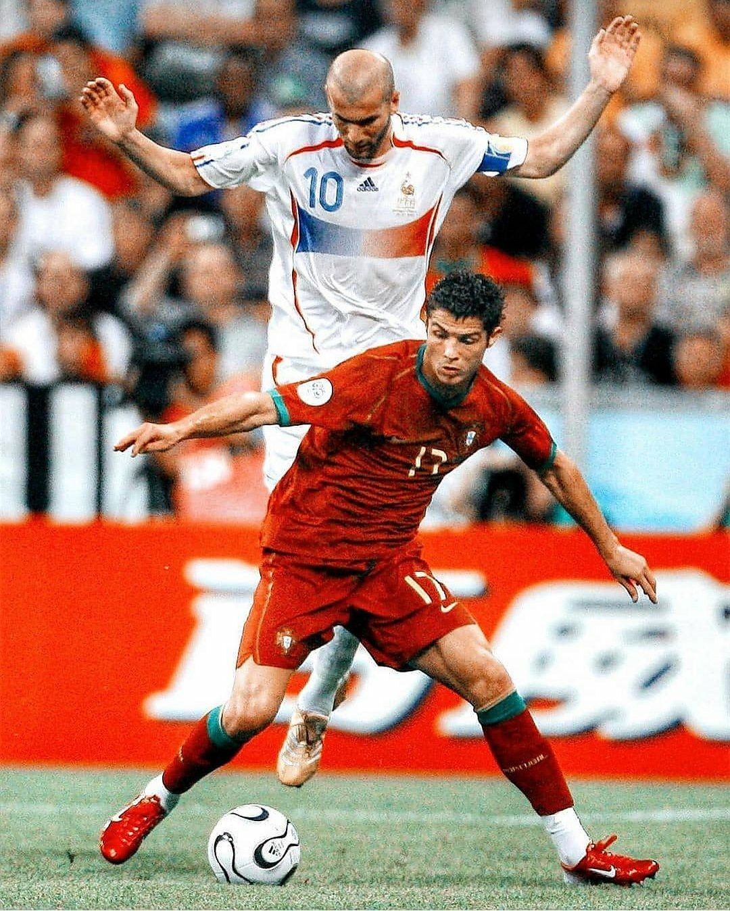
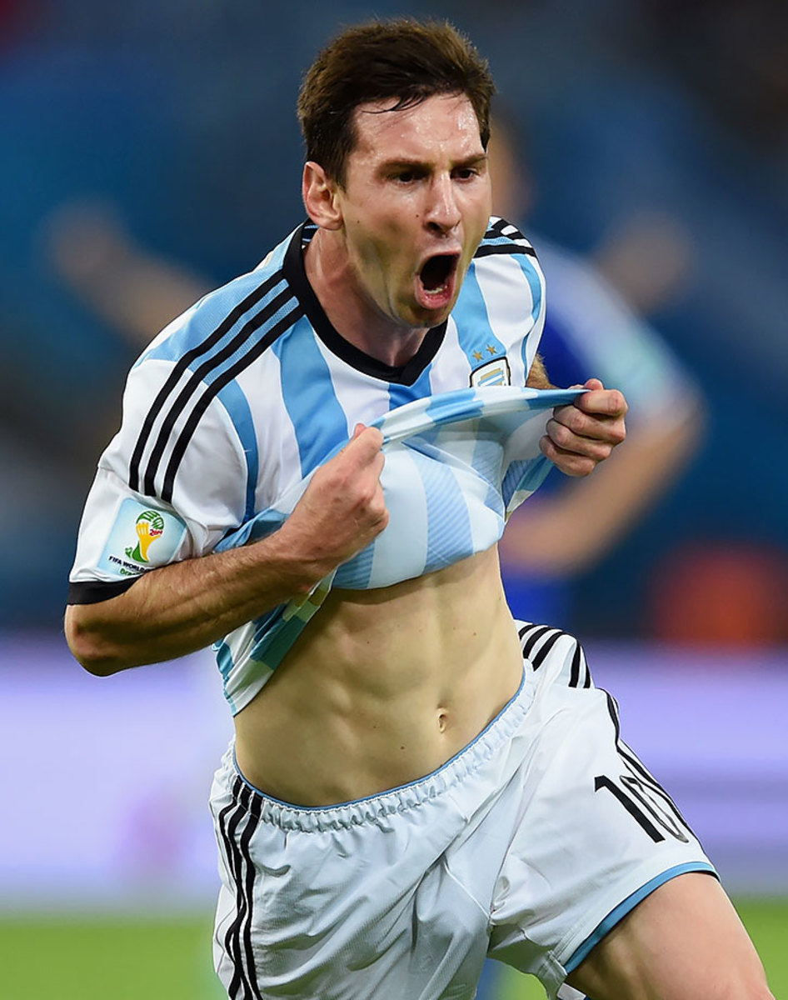

Ronaldo has achieved many things throughout his carrer. He single handedly dominated entire soccor through his very hardwork. I will mentioned the achievements below
Leonal Messi is widely regarded as one of the greatest football players of all time. He has won numerous accolades, including a record seven Ballon d'Or awards, and has scored over 600 goals in La Liga.
This is a brief about both of the players. They are the rare tallents to be found in today's football era.